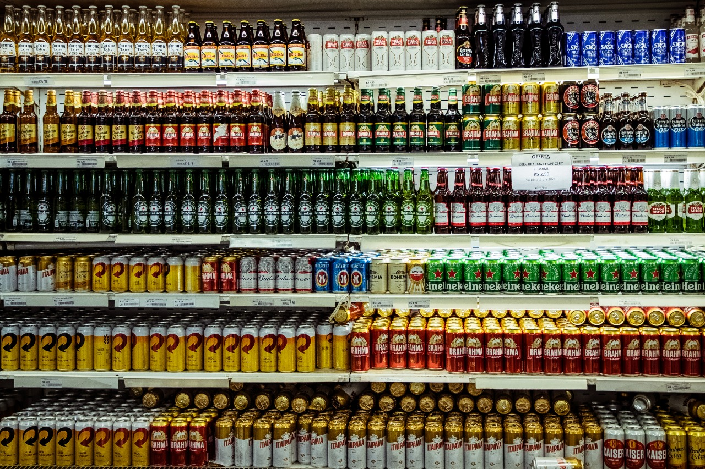
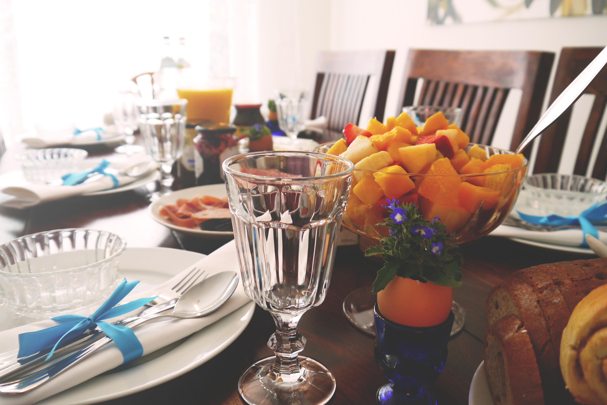
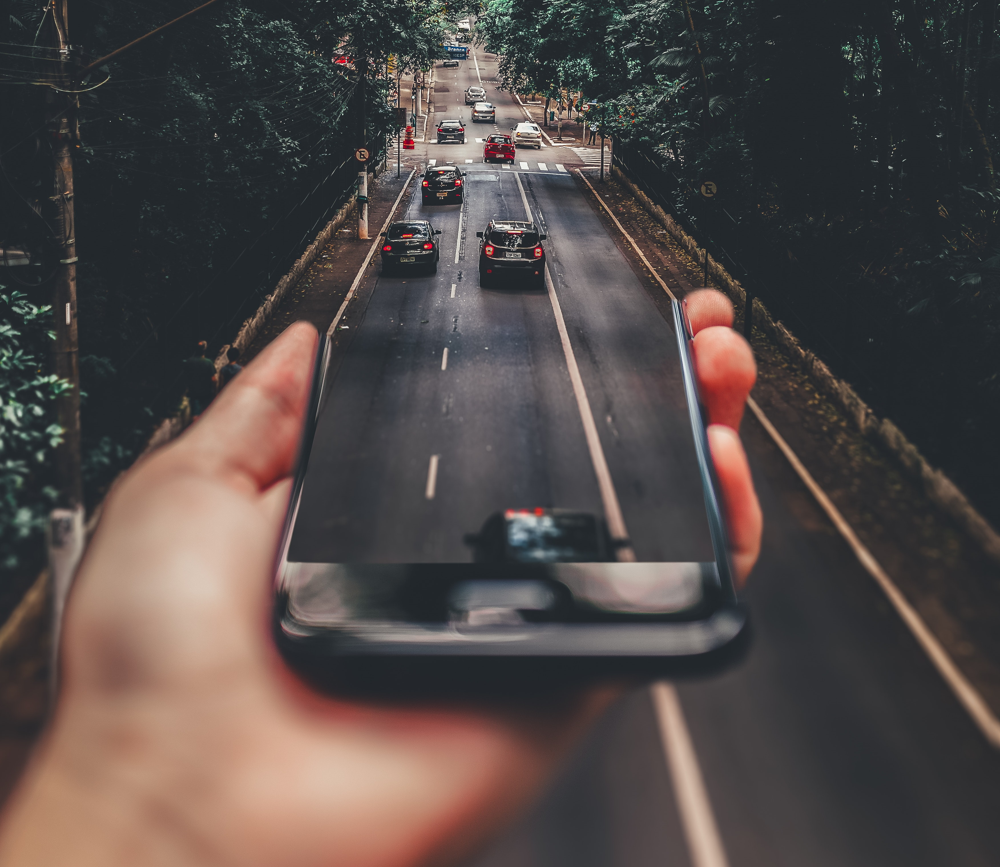
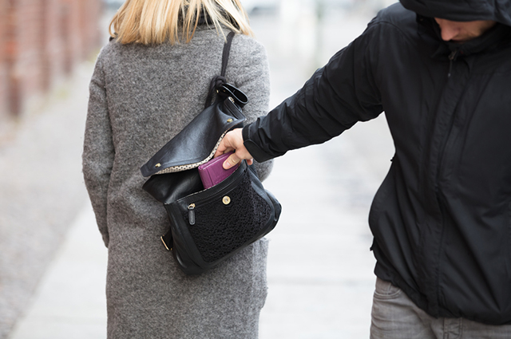

Finalmente a melhor época do ano está se aproximando! É tempo de deixar os problemas de lado e curtir a energia contagiante do Carnava! Em Belo Horizonte, o Carnaval de rua cresce cada vez mais e hoje já pode ser considerado como um dos maiores do Brasil! Nesse ano de 2020, a expectativa é de que 5 milhões de foliões curtirão a maior festa popular do país!
E você, já escolheu os bloquinhos para aproveitar o carnaval de rua em BH? O seu bolso também está preparado para a folia? No ano de 2018, o aplicativo Guiabolso (https://www.guiabolso.com.br/) realizou uma pesquisa que apontou os principais gastos dos foliões no Carnaval daquele ano. O maior gasto foi com comidas (62,3%), seguido por bebidas (50,8%), transportes (28,7%), hospedagens (24,6%), fantasias (9%) e lojas de conveniência (6,6%).
Se o seu orçamento não está dos melhores nesse ano, não se preocupe! Dá pra curtir muito e economizar ao mesmo tempo com essas 7 dicas incríveis de como economizar no carnaval de rua que a gente separou para você!
#Dica 1 - Planejamento é TUDO! ;)

Essa é a dica mais importante de todas. Afinal de contas, planejar os gastos previamente é a chave principal para um bom controle do orçamento. Sugerimos que você primeiramente estipule o valor que está disposto(a) a gastar durante todo o período do Carnaval e depois divida-o entre os dias que você vai curtir a folia, seguido das suas prioridades de gastos (comidas, bebidas, festas pagas, transporte, etc).
Existem diversas ferramentas que podem ajudar no seu planejamento! Com uma rápida pesquisa, você encontrará um universo de aplicativos de organização financeira disponíveis para te auxiliar, além dos planners físicos, para você que funciona melhor fazendo as contas na ponta do lápis. Vamos sugerir alguns aplicativos que podem te ajudar nessa tarefa, mas fique livre para escolher o que você mais se identificar!
Indicamos o Mobills, que é uma plataforma bem completa em que você consegue gerenciar suas despesas pela geolocalização, além de conseguir sincronizar os dados da nuvem e muito mais! Outra opção interessante é o Spendee, recomendado para quem gosta de um design mais simples e minimalista! Para finalizar, sugerimos também o app Expense IQ, que permite a geração de relatórios técnicos com os gastos e orçamentos feitos, disponível na plataforma Android.
#Dica 2 -

Sabemos que no Carnaval de rua em BH o que não faltam são ambulantes espalhados pelos bloquinhos vendendo diversas opções de bebidas, certo? Porém, é claro que o conforto de poder comprar sua bebida onde estiver eleva bastante o custo da bebida. Então, a dica que damos para você economizar nesse Carnaval é comprar suas bebidas em algum supermercado antes de ir para os bloquinhos e, se você estiver com a galera, para mantê-las geladinhas uma caixa de isopor seria bem útil!
Você quer saber quais são os grandes supermercados que estarão próximos aos principais blocos de rua em BH? Então baixe o nosso e-book que conta com essa e mais outras dicas imperdíveis para que você prepare o seu bolso para o Carnaval!
#Dica 3 - Comer antes do rolê!

Muitas vezes saímos de casa de barriga vazia para os bloquinhos e acabamos deixando para comer nos lugares que vamos (tem que comer bem pra não dar PT, não é mesmo?!), o que torna isso um gasto a mais em nosso orçamento. Então, lembre-se de fazer uma refeição reforçada antes de ir para os blocos de rua, e caso você seja daquelas pessoas que gostam de curtir a folia durante o dia inteiro, é válido carregar pequenos snacks na bolsa, para que seja gasto o mínimo possível com comida na rua!
#Dica 4 - E por que não beber antes do rolê também?

Como já falamos na #Dica2, as bebidas vendidas dentro dos bloquinhos são bem mais caras do que quando compramos antes. E, se as bebidas forem compradas em promoções nos supermercados antes mesmo do Carnaval, tudo fica ainda bem mais barato! Que tal juntar a galera, fazer um planejamento, comprar as bebidas antes e fazer um pré em casa mesmo? Quem sabe não rola até um churrasquinho, aí já dá pra fazer a #Dica3 também! Depois é só partir para os bloquinhos naquele grau e curtir a festa!
#Dica 5 - Transporte compartilhado!

Todo mundo sabe que o trânsito fica uma loucura em época de Carnaval, né? O transporte público é uma ótima opção para quem quer economizar, porém, devido aos horários especiais de feriado e aos grandes engarrafamentos, talvez não fique muito viável, dependendo da distância de onde você for. Então, a dica é optar por utilizar o modo compartilhado dos aplicativos de transporte como Uber e 99 ou dividir a tarifa com os amigos! Muitas vezes, essas opções tornam as viagens até mais baratas do que o preço da passagem de ônibus. Ah, e lembrando: se beber não dirija!
#Dica 6 - Economize na fantasia!

Tem gente que planeja durante o ano inteiro qual fantasia irá usar na folia! Cada ano tem algum tipo de fantasia que vira tendência no Carnaval. Com ajuda da criatividade, você consegue fazer a sua própria fantasia gastando o mínimo possível! Inclusive, preparamos um post exclusivo com várias dicas de como fazer a sua própria fantasia! Clique aqui e confira!
#Dica 7 - Negocie descontos

Você é daquelas pessoas que gostam de pechinchar um descontinho? Isso pode ser muito útil na hora de economizar na folia! Seja para comprar bebidas, comidas ou fantasias, vale a pena tentar! Uma boa dica para conseguir esses descontos é optar pelo pagamento à vista com dinheiro, pois assim é sempre bem mais fácil para negociar o valor do produto que você quer comprar!
#Dica Extra - Cuidado com os seus documentos e pertences pessoais!

Todo mundo já sabe que no Carnaval de rua devemos redobrar as nossas atenções para nossos pertences, pois o número de roubos e furtos é bem alto nessa época do ano, ainda mais em espaços com uma grande aglomeração de pessoas. E ninguém quer estragar a folia perdendo algum ítem desses, até porque isso fará você perder tempo e dinheiro!
Então, não custa lembrar: evite levar o celular para lugares mais perigosos, ou opte por colocá-lo em lugares estratégicos, como pochetes e doleiras. Leve somente a quantidade de dinheiro que você for gastar naquele dia e deixe os cartões em casa! Levar um documento de identificação mais antigo também pode fazer com que você evite futuros transtornos.